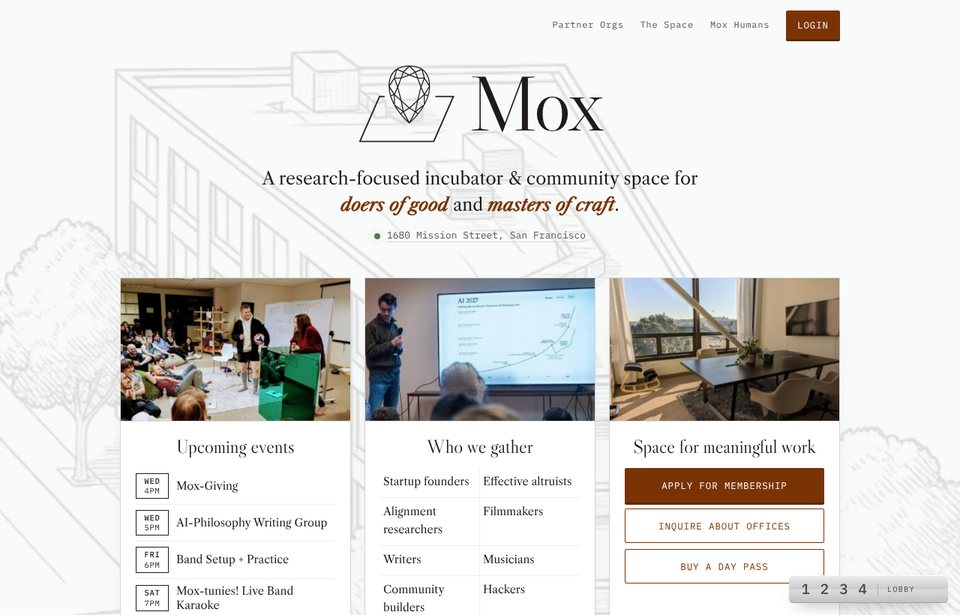
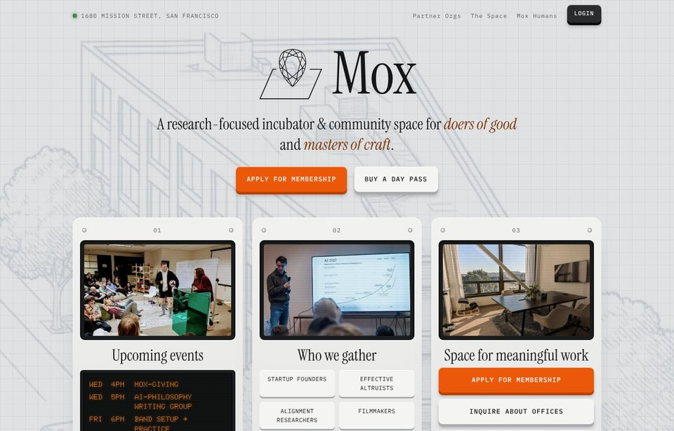
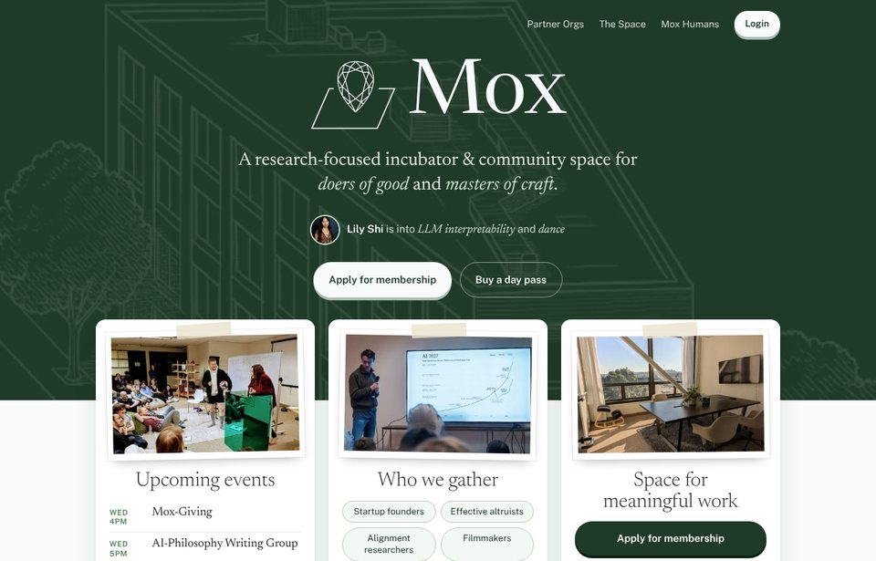
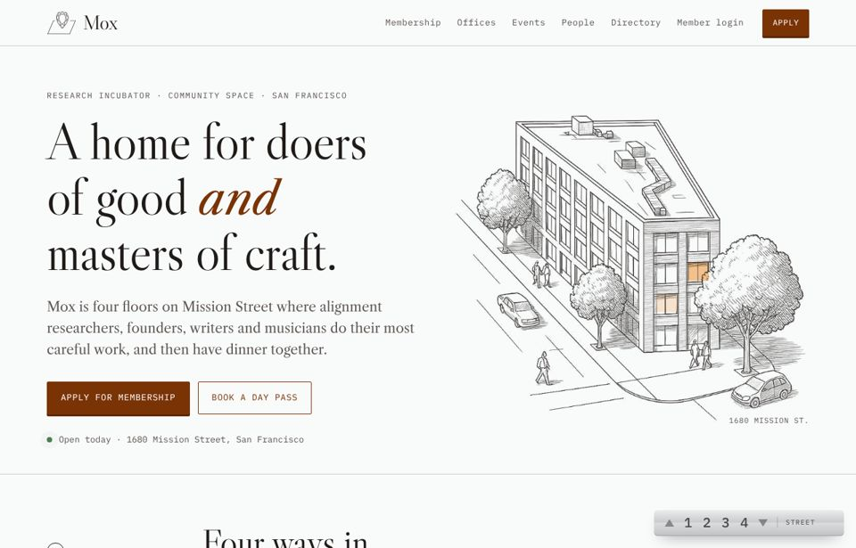
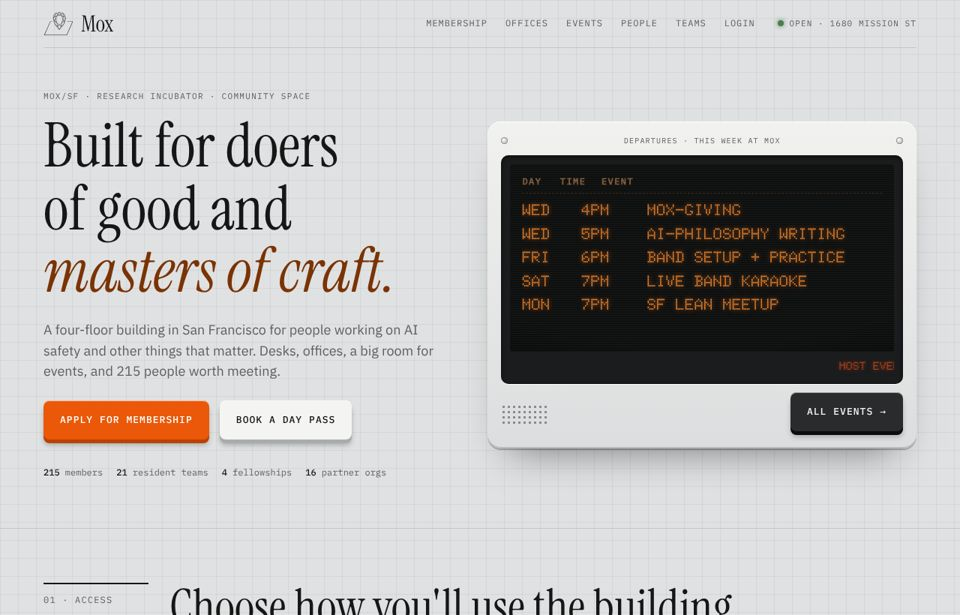
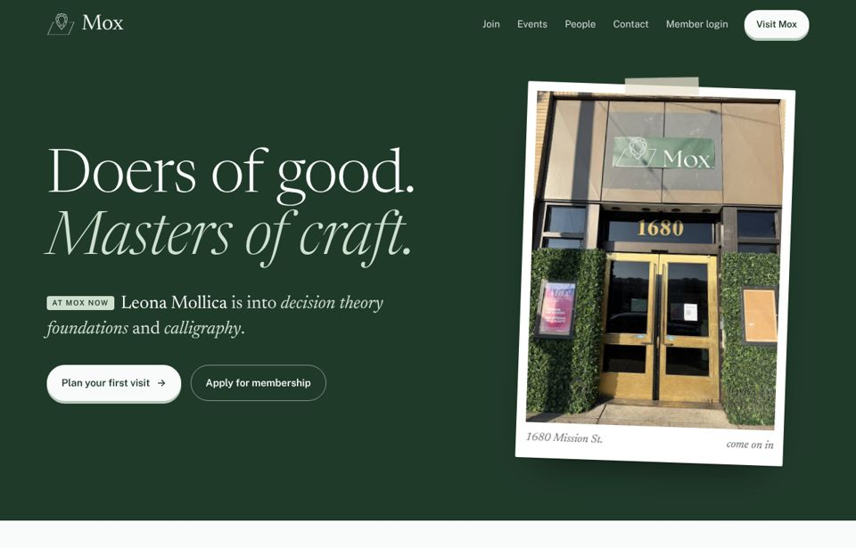

A2 · EDITORIAL
The Building
Closest to today. Drawing behind the lockup with windows that slowly light up, three hairline cards, an even photo grid, the elevator floor indicator and the lobby directory board.
Open A2 →Each direction is a working homepage built from the mood board palette, real Mox photos and the current site's content. They share the same structure and fixes. They differ in personality. Open each one, scroll it, press things.
Same three personalities, rebuilt around the current site's centered column: the big Mox lockup over the building drawing, the tagline with its italic emphasis, and the three-card row (events, who we gather, space for meaningful work). The cards now share one size and one accent color, and every photo comes from today's moxsf.com.
Update: the copy is now moxsf.com's own, word for word, just laid out differently. Staff and members show their headshots with their "is into" lines, and the partner orgs sit in a monochrome logo strip that turns to each company's colors on hover.

Closest to today. Drawing behind the lockup with windows that slowly light up, three hairline cards, an even photo grid, the elevator floor indicator and the lobby directory board.
Open A2 →
The drawing becomes a blueprint on the grid. The three cards are instrument panels with screens: a departure board for events, keycaps for who we gather, pushable keys for joining.
Open B2 →
Storefront green with the drawing glowing faintly. The three cards sit on the green edge with taped photos, and joining is a 1, 2, 3 path: day pass, membership, office.
Open C2 →
The closest to today's Mox, cleaned up. The building drawing becomes the hero, and the page is organized like the building itself: lobby, events, people, directory.

Mox as a well-made instrument. Concrete grey on a drafting grid, events on a transit-style departure board, and four physical keys that switch between ways to join.

People first. The storefront green carries the page, the hero says who is at Mox right now, and joining is a clear three-step path from a visit to an office.
These are direction prototypes, not finished pages. Events, members, staff and room numbers come from moxsf.com today. Some perk lines (for example "lunch with members" or "guest passes") are placeholder copy to show structure, and links don't go anywhere yet. Pick one, or mix parts, and I'll build it out.